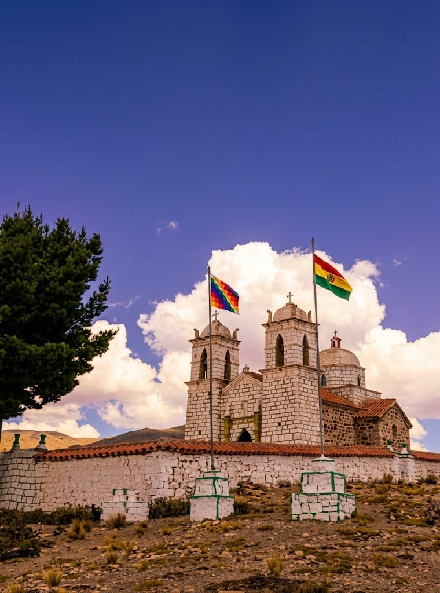
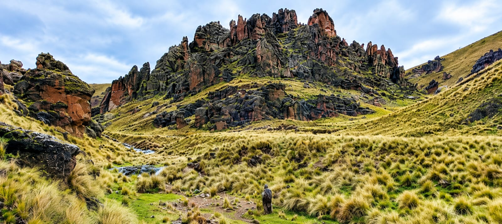
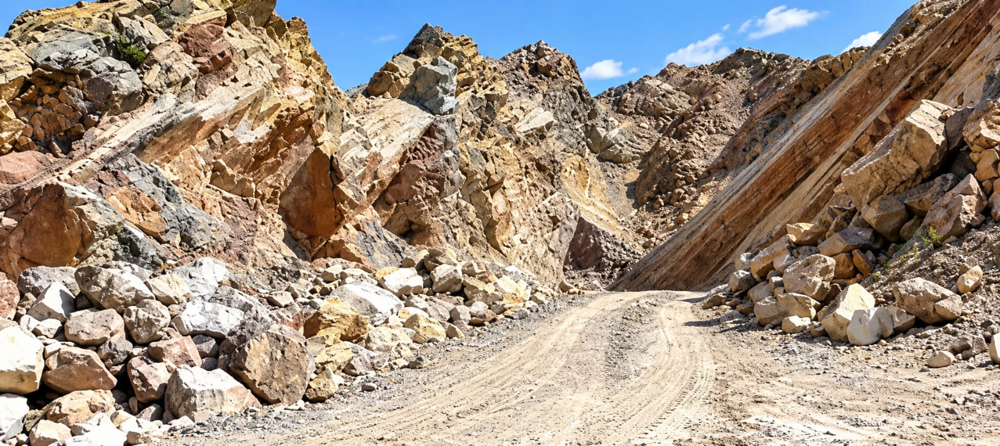

Calvario Pata
Conoce este lugar representativo del municipio de Colquencha.
Descubre nuestros paisajes, lugares de interés y la belleza de nuestro municipio.
Ver fotografías ↓ Ver videos ▶Selecciona un lugar para ver todas sus fotografías.

Conoce este lugar representativo del municipio de Colquencha.

Descubre los paisajes y las formaciones naturales de nuestra región.

Conoce el entorno y las actividades productivas del municipio.
Un municipio con paisajes, tradiciones y una comunidad llena de historia.
Observa videos de los paisajes y las actividades de nuestro municipio.
Video de presentación del municipio.
Explora también nuestra cultura y tradiciones.
Conocer nuestra cultura → Volver al inicio